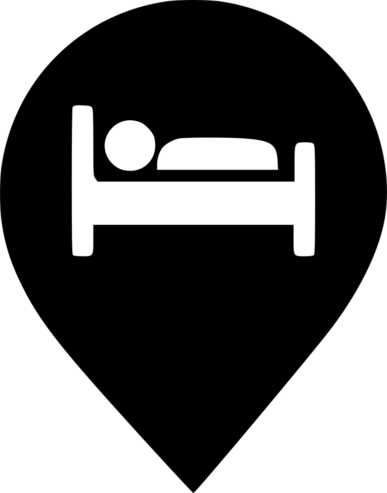

Switzerland is a beautiful country located in the heart of Europe. Known for its stunning mountain landscapes, picturesque villages, and world-renowned ski resorts, Switzerland is a popular destination for tourists from all over the world. The country is also famous for its delicious chocolate, cheese, and watchmaking industries. Switzerland is home to many international organizations like the United Nations, the World Health Organization, and the International Olympic Committee. The country has four official languages: German, French, Italian, and Romansh. Switzerland is known for its high standard of living and is considered one of the wealthiest countries in the world. It is also known for its neutrality and has not been involved in any major conflicts since 1815.
Switzerland is a popular holiday destination for many reasons. The country is known for its stunning natural beauty, with the Swiss Alps providing breathtaking views and world-class skiing and snowboarding opportunities. Switzerland is also home to picturesque towns and cities, with charming architecture, quaint shops, and delicious food. The country has a rich cultural heritage, with many museums, galleries, and historic sites to visit. Switzerland is also a safe and clean country, with a high standard of living and excellent infrastructure. Whether you're looking for adventure, relaxation, or culture, Switzerland has something for everyone. Activities in Switzerland include skiing, snowboarding, hiking, mountain biking, paragliding, rafting, and many other outdoor sports. The country is also home to many museums, galleries, and historic sites, as well as world-class shopping and dining.
